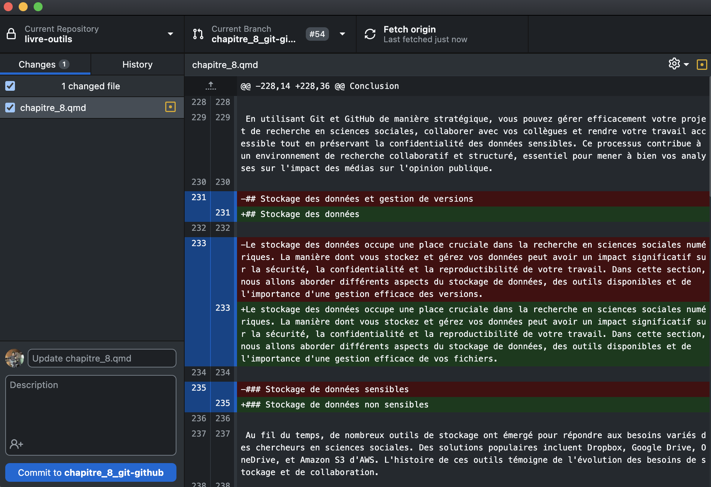

| Critères | OSF | GitHub/ GitLab | Institutionnelles1 | Grand public2 |
|---|---|---|---|---|
| Accessibilité | Gratuit | Gratuit | Gratuit (institutionnel) | Gratuit (limité) |
| Existence d'une communauté d'utilisateurs | Grande | Très grande | Grande | Très grande |
| Popularité en sciences sociales | De plus en plus populaire | De plus en plus populaire | Populaire | Très populaire |
| Compatibilité avec d'autres outils | Facilement compatible | Facilement compatible | Facilement compatible | Facilement compatible |
| Transparence et réplicabilité | Excellente | Excellente | Faible | Faible |
| Adaptabilité et flexibilité | Très flexible | Très flexible | Peu flexible | Peu flexible |
| 1 Ex. : OneDrive, Nextcloud | ||||
| 2 Ex. : Dropbox, Google Drive | ||||
4 Outils de gestion de données : de l’entreposage personnel à la science ouverte
Adrien Cloutier (Université Laval)
Jérémy Gilbert (Western University)

En début de parcours aux cycles supérieurs, le chercheur se trouve généralement dans une position où il doit amorcer la rédaction d’un mémoire ou d’une thèse. Il a peut-être commencé à prendre des notes sur la littérature, à créer des fichiers de codes, à collecter des données, à collaborer avec des coauteurs. Rapidement, une question simple, mais cruciale se pose : dans une optique de respect des valeurs scientifiques, où entreposer tout ce contenu ?
4.1 Point d’observation : brève histoire de la gestion des données
La transparence et la réplicabilité sont des valeurs fondamentales de la recherche scientifique. Comme le soulignent King et al. (2021) dans leur ouvrage de référence Designing Social Inquiry, les « procédures doivent être publiques » pour permettre la validation et la critique des résultats. Sans accès aux données, aux méthodes et aux processus ayant mené à une conclusion, la communauté scientifique ne peut ni reproduire ni vérifier les travaux de ses pairs.
Pourtant, ces idéaux ont longtemps été difficiles, voire impossibles à atteindre. C’est ce constat qui a donné naissance au mouvement de la science ouverte. Comme l’explique le gouvernement du Canada :
« La science ouverte n’est pas la façon dont la science a été historiquement conduite. La tradition, la culture et les mesures incitatives ont créé un environnement dans lequel les apports, les résultats et les processus scientifiques sont soit fermés, soit accessibles moyennant des frais, soit uniquement accessibles aux chercheurs et à leurs collaborateurs eux-mêmes. La science ouverte est un mouvement visant à rendre les processus et pratiques scientifiques, y compris la méthodologie et les résultats de la recherche, plus ouverts et transparents. » (Gouvernement du Canada, 2022)
Jusque dans les années 2000, chaque chercheur développait ses propres méthodes d’organisation, souvent artisanales : dossiers sur le bureau, copies de sauvegarde sur disque dur externe, fichiers envoyés par courriel aux collaborateurs. La démocratisation d’Internet dans les années 1990, puis l’arrivée de l’infonuagique et des outils collaboratifs dans les années 2010, ont progressivement rendu possible ce que les contraintes technologiques empêchaient auparavant : une gestion des données transparente, accessible et sécuritaire.
Ce mouvement s’est concrétisé par des politiques à tous les niveaux. À l’échelle internationale, les 193 États membres de l’UNESCO ont adopté en 2021 la Recommandation sur une science ouverte (UNESCO, 2021), un cadre mondial soulignant l’importance de rendre la science plus accessible et transparente pour tous. Au Canada, la conseillère scientifique en chef, Mona Nemer, a publié la Feuille de route pour la science ouverte en 2020 (Gouvernement du Canada, 2020), suivie en 2021 par la Politique des trois organismes sur la gestion des données de recherche (CRSNG, IRSC et CRSH) (Gouvernement du Canada, 2021). Au Québec, les Fonds de recherche du Québec (FRQ) se sont également dotés d’une ambitieuse Politique de diffusion en libre accès en 2019, mise à jour en 2022 (Fonds de recherche du Québec, 2022).
Toutes ces politiques lient de plus en plus directement le financement de la recherche à des responsabilités claires en matière de gestion des données. Règle générale, tout chercheur financé par ces organismes subventionnaires est maintenant tenu de rédiger un plan de gestion des données, de déposer ses données finales dans un dépôt sécurisé à la fin du projet pour en assurer la pérennité et l’accessibilité, et de rendre disponible en libre accès ses publications, codes et résultats.
Même en l’absence de financement ou d’une obligation formelle, ces principes constituent des bonnes pratiques pour tout projet de recherche. Une saine gestion des données, planifiée avant même le début du projet et maintenue tout au long du cycle de la recherche jusqu’à l’archivage final, est ce qui garantit la transparence, la reproductibilité et l’intégrité de la démarche scientifique. La gestion des données n’est plus une pratique marginale, optionnelle, complexe ou impossible, mais un élément central de la conduite responsable de la recherche. La question « où entreposer ses données ? » n’est plus seulement une question pratique de sauvegarde personnelle. Elle touche désormais à trois dimensions fondamentales :
Transparence : La reproductibilité des résultats de recherche exige de pouvoir accéder à chaque étape détaillée de l’évolution d’un projet.
Accessibilité : Les projets de recherche impliquent régulièrement un partage de dossier entre de multiples chercheurs, puis avec la communauté scientifique et avec le public.
Sécurité : Les chercheurs manipulent une quantité croissante de données, dont certaines sont sensibles ou confidentielles.
La façon d’entreposer, de gérer et de partager ses données a donc un impact direct sur la qualité de la recherche, sur la capacité à collaborer efficacement, et sur la conformité aux exigences de l’institution et des organismes subventionnaires.
Pour prendre de bonnes décisions en matière de gestion des données, il est utile de situer ses besoins dans le cycle de vie de la recherche. Plutôt que de multiplier les outils au fil du projet, le chercheur gagne à réfléchir dès le départ à une stratégie cohérente qui répond aux exigences de la science ouverte. Pour chaque phase du cycle, la question de l’entreposage se pose différemment. Dans les sections qui suivent, nous explorons ces phases à travers des questions pratiques d’entreposage. Nous consacrons ensuite une attention particulière à Git et GitHub, des outils transversaux qui permettent de gérer l’ensemble du cycle avec une seule solution : code, données, documentation et collaboration.
4.2 Arpentage et choix éditorial : où entreposer ses données à chaque phase du cycle
4.2.1 Planification
Dès l’étape de planification, le chercheur est parfois contraint à rédiger un plan de gestion des données, voire à enregistrer ses hypothèses. Comment organiser ses fichiers dès le départ pour conserver des traces de chaque décision et de chaque étape du processus de recherche ?
Cette réflexion en amont évite de se retrouver avec des données éparpillées sur plusieurs plateformes, des versions contradictoires de fichiers, ou une documentation insuffisante pour permettre la réplication.
Les outils de rédaction (où écrire son mémoire, quelle plateforme utiliser pour collaborer avec son directeur) sont détaillés au Chapitre 8. Ici, l’enjeu est différent : il s’agit de planifier simultanément la gestion du texte, des données, des analyses et de leurs multiples versions dès le départ.
Des outils comme l’Open Science Framework (OSF) offrent une plateforme complète pour la recherche ouverte, permettant de gérer l’ensemble d’un projet de recherche, incluant la préinscription.
La préinscription consiste à planifier sa recherche avant de commencer et à soumettre ce plan à un registre public. Les hypothèses de départ, dérivées de la littérature, sont enregistrées sur la plateforme, et toute modification au devis initial peut être retracée. Cette pratique améliore la qualité et la transparence des recherches, renforce la crédibilité des résultats, et facilite la reproductibilité. Elle permet également de revendiquer ses idées plus tôt et de distinguer clairement la recherche exploratoire (générer des hypothèses) de la recherche confirmatoire (tester des hypothèses). Cette pratique est de plus en plus répandue en recherche quantitative et expérimentale, où les hypothèses et les analyses statistiques peuvent être spécifiées à l’avance. En recherche qualitative ou exploratoire, la préinscription est moins courante, car la démarche repose souvent sur une approche itérative où les questions de recherche évoluent au contact des données.
Outre OSF, d’autres registres accueillent la préinscription, comme AsPredicted, dont le formulaire court convient bien aux devis expérimentaux simples.
Au-delà de la préinscription des hypothèses, plusieurs organismes subventionnaires exigent maintenant la rédaction d’un plan de gestion des données (PGD) dès la demande de financement. Ce document décrit comment les données seront collectées, organisées, documentées, entreposées et éventuellement partagées tout au long du projet. Au Canada, l’Assistant PGD est l’outil officiel développé par l’Alliance de recherche numérique pour guider les chercheurs dans cette démarche. Il propose des modèles adaptés aux exigences des trois organismes fédéraux (CRSH, CRSNG, IRSC) et de plusieurs autres institutions.
4.2.2 Collecte et analyse
Avant de choisir où entreposer ses données, un principe s’impose : ne jamais conserver de fichiers uniquement sur son ordinateur local. Un disque dur peut tomber en panne, un ordinateur peut être volé ou perdu. Tout fichier qui n’existe qu’en local est un fichier à risque. Dès le début d’un projet, chaque document, chaque script, chaque donnée devrait être synchronisé sur un service infonuagique ou versionné sur GitHub (idéalement les deux, selon la nature des fichiers).
Le chercheur collecte, manipule et analyse des données. Ces données peuvent prendre plusieurs formes : transcriptions d’entrevues, enregistrements audio, données de sondages, bases de données statistiques, scripts de code, de textes, d’images, de tableaux, etc. Les données de recherche peuvent poser des défis spécifiques en matière de sécurité, d’éthique et de collaboration.
La question centrale ici n’est pas seulement « où entreposer ? », mais surtout « où peut-on entreposer les données selon leur nature ? » Car toutes les solutions ne se valent pas, et certaines sont inappropriées selon le type de données manipulées.
Avant de choisir une solution d’entreposage, il faut d’abord déterminer si les données sont sensibles ou non. Cette distinction n’est pas qu’une question théorique : elle a des implications éthiques et pratiques importantes.
Une donnée est considérée comme sensible si elle permet d’identifier directement ou indirectement des individus, ou si elle contient des informations confidentielles ou privées. Voici des exemples courants en sciences sociales :
- Entrevues ou groupes de discussion contenant des informations personnelles (noms, lieux, événements personnels)
- Sondages ou questionnaires incluant des données démographiques détaillées qui pourraient identifier des participants
- Données administratives obtenues auprès d’organisations (dossiers médicaux, dossiers scolaires, données d’entreprise)
- Enregistrements audio ou vidéo de participants identifiables
- Données géolocalisées précises (traces GPS, adresses)
Dans les universités canadiennes, la gestion de données sensibles est encadrée par un comité d’éthique de la recherche. Lorsqu’un chercheur soumet son protocole de recherche pour approbation éthique, il doit spécifier comment il va collecter, entreposer, protéger et éventuellement détruire ses données sensibles. Le non-respect de ces engagements peut avoir des conséquences sérieuses, allant du retrait de l’approbation éthique à des sanctions institutionnelles.
Les principes à respecter pour les données sensibles incluent la minimisation (ne collecter que les données nécessaires), l’anonymisation (retirer ou masquer les identifiants dès que possible), le chiffrement (protéger les fichiers par mot de passe ou chiffrement), l’accès limité (seules les personnes autorisées dans le certificat éthique peuvent accéder aux données) et l’entreposage sécurisé (utiliser des serveurs approuvés, idéalement situés au Canada).
À l’inverse, certaines données ne posent pas de problème de confidentialité. C’est le cas des statistiques publiques, des corpus textuels ouverts comme les articles de presse ou les transcriptions de débats parlementaires, ou encore des données administratives agrégées sans possibilité d’identification. Pour ces données, les contraintes sont beaucoup plus souples. On peut les entreposer sur des plateformes grand public, les partager plus librement, et éventuellement les rendre publiques sans approbation éthique spécifique.
4.2.2.1 Solutions d’entreposage pour données sensibles
Pour les données sensibles, il est essentiel de privilégier des solutions institutionnelles qui respectent les exigences éthiques et légales. La plupart des universités canadiennes offrent des services d’entreposage sécurisé à leur communauté de recherche.
OneDrive institutionnel (avec serveurs canadiens) : Plusieurs universités canadiennes ont négocié des ententes avec Microsoft pour que les données de leur OneDrive institutionnel soient hébergées sur des serveurs situés au Canada. Cette configuration respecte généralement les exigences des comités d’éthique. Il est important de vérifier auprès de son institution si cette option est disponible et si elle est approuvée pour les données sensibles.
Nextcloud institutionnel : Certaines universités offrent Nextcloud, une plateforme de stockage libre qui peut être hébergée sur les serveurs de l’institution. C’est souvent la solution privilégiée pour les données hautement confidentielles, car les fichiers ne quittent jamais l’infrastructure universitaire. Nextcloud offre des fonctionnalités similaires à Dropbox (synchronisation, partage de fichiers), mais avec un contrôle total sur l’emplacement des données.
Serveurs de recherche dédiés : Certaines facultés ou groupes de recherche disposent de leurs propres serveurs sécurisés. Ces infrastructures sont particulièrement adaptées aux projets impliquant des données très sensibles ou des volumes importants.
Avant de choisir une solution pour des données sensibles, il convient de consulter le bureau de soutien à la recherche de son institution pour connaître les options approuvées et les procédures à suivre.
4.2.2.2 Solutions d’entreposage pour données non sensibles
Si les données ne sont pas sensibles, le chercheur dispose de beaucoup plus de flexibilité dans le choix de ses outils. Dropbox est très utilisé dans plusieurs milieux, même à titre d’utilisation personnelle. Dans le milieu académique, le partage de fichiers peu volumineux par Dropbox est très fréquent. Son utilisation est relativement accessible : 2 Go sont offerts gratuitement, puis un abonnement est nécessaire pour entreposer davantage. Dropbox se démarque par sa popularité et par son interface intuitive, s’intégrant facilement dans le gestionnaire de fichiers. Sa synchronisation est rapide et familière pour la plupart des utilisateurs, bien que sa capacité gratuite soit limitée et que ses serveurs américains le rendent problématique pour des données sensibles. Dropbox est ainsi très utile dans le cadre de gestion de données collaborative relativement simple.
Google Drive est facile d’utilisation par son intégration au sein des outils Google. La plateforme, en général, est fréquemment utilisée dans le cadre de rédaction, pour son suivi des modifications et la possibilité de travailler à plusieurs sur un document en même temps. Google Drive offre 15 Go gratuits, et son utilisation est simple et intuitive. Pour des projets impliquant du code et des données non sensibles de taille modérée, GitHub et GitLab sont d’excellentes options. Nous y reviendrons en détail plus loin, mais sachez qu’ils permettent non seulement d’entreposer les fichiers, mais aussi de suivre rigoureusement leur évolution et de collaborer efficacement grâce au versionnement et aux demandes de fusion (pull requests). Ils sont gratuits, tant pour les projets publics que pour les dépôts privés (avec certaines limitations), et sont très utilisés en recherche. Ils nécessitent toutefois une courbe d’apprentissage et ne sont pas adaptés pour des fichiers très volumineux.
4.2.2.3 Organiser son cloud comme on organise son bureau
Un cloud mal structuré n’est guère mieux qu’un bureau encombré. Pour que les chemins de fichiers restent stables et que la collaboration soit fluide, il vaut la peine de réfléchir dès le départ à une arborescence logique et cohérente. Une structure simple pourrait ressembler à ceci :
Cloud (Dropbox / OneDrive)
├── Travail/
│ ├── Projet_these/
│ ├── Publications/
│ └── Enseignement/
├── Etudes/
│ ├── Cours_automne_2024/
│ └── Notes/
└── Personnel/Cette organisation présente deux avantages majeurs. D’abord, les chemins de fichiers dans les scripts d’analyse restent prévisibles et stables d’un collaborateur à l’autre. Ensuite, elle facilite la distinction entre ce qui appartient au cloud (données, documents) et ce qui appartient à un dépôt Git (code, scripts), ces deux espaces devant rester séparés.
4.2.3 Archivage et partage
Les deux sections précédentes concernaient les données actives : celles que le chercheur utilise quotidiennement pendant sa recherche. Mais arrive un moment où le projet se termine, le mémoire est déposé, et le chercheur s’apprête peut-être à publier un article. C’est à ce stade que les données deviennent finales et qu’il faut penser à leur archivage et à leur partage potentiel.
Le dépôt sécurisé suit une logique scientifique : cela rend les données trouvables, citables et potentiellement réutilisables par d’autres chercheurs, ce qui contribue à l’avancement de la science de façon transparente.
Les données actives sont celles que le chercheur manipule pendant sa recherche. Elles évoluent constamment : il ajoute de nouvelles observations, corrige des erreurs, crée de nouvelles variables. Ces données vivent dans son espace de travail.
Les données finales sont celles qui accompagnent une publication ou un mémoire déposé. Elles ne changeront plus, ou très peu. Au moment où elles sont hébergées dans un dépôt et qu’un identifiant unique leur est attribué (un DOI, par exemple), elles sont figées. Toute modification ultérieure entraîne la création d’une nouvelle version des données.
Cette distinction est importante parce qu’elle détermine où et comment entreposer les données. Les outils utilisés pendant la recherche (Nextcloud, GitHub) ne sont pas conçus pour l’archivage. À l’inverse, les dépôts de données (Borealis, Zenodo, etc.) ne sont pas pratiques pour un travail quotidien, mais excellent pour la préservation et le partage.
Plusieurs raisons justifient le dépôt de données finales :
Conformité aux exigences : Certains organismes subventionnaires et certaines revues académiques exigent le dépôt des données dans un dépôt reconnu. Ne pas le faire peut compromettre l’acceptation d’un article ou l’admissibilité à des subventions futures.
Conservation sûre : Les dépôts de données offrent une infrastructure professionnelle de sauvegarde à long terme. Contrairement à un compte OneDrive qui pourrait disparaître après le départ de l’université, un dépôt institutionnel garantit que les données seront accessibles pendant des décennies.
Visibilité et impact : Déposer ses données augmente la visibilité de la recherche. D’autres chercheurs peuvent découvrir ces données, les citer, et potentiellement les réutiliser pour de nouvelles analyses. Cela augmente l’impact du travail au-delà de la publication initiale.
Reproductibilité : La science ouverte repose sur la capacité de reproduire et de vérifier les résultats. En rendant les données accessibles (avec la documentation appropriée), le chercheur permet à d’autres de reproduire ses analyses et de valider ses conclusions.
Respect du principe FAIR (Wilkinson et al., 2016) : Les données déposées dans un dépôt structuré deviennent facilement trouvables (avec des métadonnées), accessibles (via un identifiant permanent), interopérables (avec des formats standards), et réutilisables (avec une licence claire). Ce sont les quatre piliers du principe FAIR (findable, accessible, interoperable, reusable) qui guide la gestion moderne des données de recherche.
4.2.3.1 Borealis : le dépôt Dataverse canadien
Borealis est le dépôt Dataverse canadien, une infrastructure nationale accessible à tous les chercheurs canadiens. Plusieurs institutions canadiennes mettent à la disposition de leur communauté de recherche une collection institutionnelle dans Borealis, avec un accompagnement complet pour les chercheurs qui souhaitent l’utiliser. Borealis accepte tous les types de fichiers, héberge les données sur des serveurs canadiens sécurisés, émet des DOI (identifiants permanents) pour chaque jeu de données, et permet un contrôle précis de l’accès. Le chercheur peut choisir de rendre ses données entièrement publiques, de les mettre en embargo pour une période déterminée, ou de les garder en accès restreint si ses contraintes éthiques l’exigent.
Les données déposées dans Borealis sont repérables via des moteurs de recherche grâce aux métadonnées structurées. Pour utiliser Borealis, on crée un compte, puis un nouveau jeu de données, on remplit les champs de métadonnées, on téléverse les fichiers, et on publie. À ce moment, un DOI est attribué et les données deviennent officiellement archivées. Il y a de fortes chances que la bibliothèque institutionnelle offre un soutien pour l’utilisation de Borealis.
Plusieurs autres dépôts multidisciplinaires sont disponibles :
Dépôt fédéré de données de recherche (DFDR) : Comme Borealis, le DFDR est une infrastructure canadienne hébergée sur des serveurs canadiens. Il est gratuit pour les projets académiques, accepte tous les types de fichiers, et offre des fonctionnalités similaires à Borealis. Le choix entre Borealis et le DFDR dépend souvent de préférences institutionnelles ou de contraintes techniques spécifiques.
Zenodo : Hébergé par le CERN en Suisse, Zenodo est un dépôt multidisciplinaire très populaire en sciences. Il est gratuit jusqu’à 50 Go par jeu de données, offre une intégration étroite avec GitHub (idéal pour déposer du code), et permet de déposer non seulement des données mais aussi des présentations, des rapports, etc. Zenodo est particulièrement apprécié pour sa simplicité et sa rapidité de dépôt.
Open Science Framework (OSF) : OSF est une plateforme complète pour la recherche ouverte. Au-delà du simple dépôt de données, OSF permet de gérer l’ensemble d’un projet de recherche : préinscription, collaboration, versionnement, liens avec d’autres dépôts. C’est une solution intéressante pour ceux qui adoptent une approche de science ouverte dès le début de leur projet.
Lors du dépôt de données, il faut également spécifier sous quelle licence elles sont partagées. La licence définit ce que les autres chercheurs peuvent faire avec ces données : les télécharger, les réutiliser, les modifier, les republier, etc. Les licences Creative Commons (CC) sont les plus courantes pour les données de recherche.
Il n’est pas nécessaire de préserver toutes les données collectées pendant un projet. Les données à préserver devraient être réutilisables (par soi-même ou d’autres), compréhensibles (avec une documentation adéquate), et avoir une certaine valeur (complexes, coûteuses à obtenir, ou impossibles à récolter à nouveau). Certaines données peuvent être détruites à la fin du projet : les notes préliminaires, les premières versions de documents, ou du matériel facile à recueillir à nouveau. Les données de recherche qui ne mèneront pas à une publication et qui ont servi pour l’enseignement ou un travail académique n’ont généralement pas besoin d’être conservées après l’obtention du diplôme, sauf si elles ont une valeur pour des projets futurs.
En résumé, le dépôt de données finales est une étape importante qui garantit la pérennité du travail, contribue à la science ouverte, et peut augmenter l’impact de la recherche.
4.2.4 Git et GitHub tout au long d’un projet de recherche
Dans les sections précédentes, nous avons exploré différentes solutions pour entreposer les données pendant la recherche et les données finales. Chaque solution a ses forces, mais il existe un outil transversal qui mérite une attention particulière, car il peut traverser plusieurs de ces phases : Git et GitHub. Git offre un niveau de contrôle, de traçabilité et de collaboration qui dépasse largement les outils conventionnels. Cette section explique ce qu’est Git, pourquoi il est devenu si populaire en recherche, et comment il pourrait s’intégrer dans un flux de travail de recherche.
Git, développé par Linus Torvalds en 2005, s’est imposé comme le système de gestion de versions décentralisé de référence. Avec l’essor des projets logiciels dans les décennies précédentes, un besoin s’est créé pour suivre l’évolution des fichiers de code au fil du temps. Quand plusieurs centaines de développeurs travaillent sur un même projet, ce suivi est essentiel pour éviter les conflits entre les versions. Bien que des systèmes centralisés aient existé pour ce type de gestion, Git se distingue par sa décentralisation : chaque développeur détient une copie complète du projet, incluant toutes les modifications passées. Cela permet aux équipes de travailler de manière indépendante, sans dépendre d’un serveur central, ce qui réduit les risques de conflits. Sa principale force réside dans sa capacité à suivre l’évolution d’un projet en enregistrant les modifications du code source. Chaque modification, ou validation (commit), est enregistrée avec un message explicatif et un identifiant unique, permettant aux collaborateurs de comprendre facilement les évolutions du projet et d’assurer l’intégrité des données.
GitHub, lancé en 2008, est né pour répondre aux besoins de collaboration croissants dans le monde du développement du logiciel libre. Avant GitHub, les développeurs pouvaient utiliser Git en local pour gérer les versions, mais il manquait un espace centralisé pour partager le code et coordonner les efforts. GitHub a donc apporté cette solution en intégrant Git à une plateforme web, où les développeurs pouvaient héberger leurs dépôts, collaborer, et suivre le développement en ligne. Ce qui distingue GitHub, c’est son aspect social : les fonctionnalités comme les demandes de fusion (pull requests), les gestionnaires de problèmes, et le suivi des modifications permettent aux équipes de travailler efficacement et d’interagir facilement autour du code. Cette combinaison d’outils a transformé GitHub en un espace incontournable pour les projets en libre accès, facilitant le partage des connaissances et la collaboration.
Si Git a été créé pour gérer du code informatique, pourquoi un étudiant en sciences sociales devrait-il s’y intéresser ? Parce que les problèmes que Git résout ne sont pas spécifiques à la programmation. Ce sont des problèmes universels de gestion de versions, de collaboration et de traçabilité. Qui n’a jamais eu un dossier rempli de fichiers nommés Memoire_v2_final.docx, Memoire_v3_VRAIMENT_final.docx, Memoire_final_corrige_2.docx ? Ce problème n’existe pas avec Git. À chaque étape significative du travail, on crée une validation (commit), une « version enregistrée » avec un message descriptif. On n’a jamais besoin de créer des copies multiples de ses fichiers. On travaille toujours sur la version actuelle, et Git conserve automatiquement tout l’historique. Git et GitHub incarnent efficacement l’évolution vers des méthodes de travail plus flexibles, collaboratives et transparentes. Grâce à leur capacité de gestion de versions et d’historique des modifications, ils permettent aux chercheurs d’embrasser une philosophie Agile (présentée au Chapitre 3) en assurant un suivi minutieux des changements, facilitant ainsi l’itération rapide et la reproductibilité des projets.
Le tableau suivant compare les principales solutions selon leur capacité à accompagner le chercheur à travers les trois phases du cycle de recherche.
OSF et GitHub/GitLab se démarquent par leur capacité à accompagner le chercheur à travers les trois phases : planification (préinscription, documentation), collecte et analyse (versionnement, collaboration), et archivage (DOI via Zenodo pour GitHub, archivage intégré pour OSF). Les solutions institutionnelles et grand public restent utiles pour l’entreposage quotidien, mais ne répondent pas aux exigences de transparence et de réplicabilité de la science ouverte.
4.3 Manuel d’instruction : utiliser Git et GitHub pour un projet de recherche
Lorsqu’un projet est initialisé avec Git, un dossier caché appelé « .git » est créé dans le répertoire. Ce dossier contient tout l’historique des modifications apportées, y compris les informations sur chaque validation (commit), sur les différentes « branches » créées (versions parallèles du projet) et sur les métadonnées associées. Ainsi, même en travaillant avec plusieurs collaborateurs, chacun peut voir quels changements ont été effectués, par qui et pourquoi, tout en s’assurant qu’aucune version du travail ne soit perdue.
Contrairement aux outils comme OneDrive ou Google Docs qui font du versionnement automatique en arrière-plan, Git exige que l’utilisateur enregistre explicitement ses changements. Cela peut sembler contraignant au début, mais c’est en réalité une force : on décide consciemment quand créer une « version » et on documente pourquoi. Ce processus explicite crée une trace historique beaucoup plus riche et utile.
Git et GitHub favorisent le travail collaboratif de manière plus structurée que les outils conventionnels. Plusieurs chercheurs peuvent travailler sur le même projet simultanément, chacun dans sa branche de développement. Une fois les modifications effectuées, il est possible de fusionner les branches pour intégrer les changements. Cette approche évite les conflits majeurs. Un conflit survient lorsque deux collaborateurs modifient et enregistrent le même fichier ou la même partie de texte de manière indépendante, comme cela peut arriver dans un dossier Dropbox partagé. Ainsi, contrairement aux outils classiques comme Microsoft Word, où deux personnes peuvent se retrouver avec des versions distinctes d’un même document et perdre beaucoup de temps à fusionner manuellement les modifications, Git identifie automatiquement les zones conflictuelles et aide à les résoudre de façon plus méthodique.
Git fonctionne mieux avec des fichiers textuels : code, documents en format texte, fichiers de configuration, scripts, etc. Pour ces types de fichiers, Git peut montrer exactement quelles lignes ont changé entre deux versions, ce qui est extrêmement utile. Git fonctionne moins bien avec des fichiers binaires comme Word (.docx), Excel, PDF, des images ou des bases de données. Ces fichiers peuvent être stockés dans Git, mais on perd la capacité de voir les changements ligne par ligne. Pour un mémoire rédigé en Word, Git peut quand même être utile (il garde l’historique des versions du fichier), mais on n’exploite pas pleinement ses capacités.
C’est pourquoi Git est particulièrement populaire auprès des chercheurs qui :
- Rédigent en LaTeX ou
Markdown; - Écrivent du code pour leurs analyses ;
- Collaborent sur des projets techniques avec plusieurs contributeurs ;
- Valorisent la traçabilité complète de leur travail.
Bien qu’il existe des alternatives comme GitLab (déjà mentionné pour sa version à code source ouvert), Git et GitHub dominent largement le domaine grâce à leur communauté active et à leur adoption généralisée en milieu académique. Leur apprentissage représente un défi initial, mais les bénéfices en termes de traçabilité, de collaboration et de reproductibilité en font des outils essentiels pour le chercheur moderne.
Maintenant que les avantages de Git et GitHub pour la recherche sont clairs, passons à la pratique. Cette section guide le chercheur dans les étapes essentielles pour mettre en place Git pour un projet typique de recherche en sciences sociales.
Prérequis : Il faut d’abord installer Git sur son ordinateur (téléchargeable depuis git-scm.com) et créer un compte GitHub gratuit sur github.com.
Important : Il ne faut pas initialiser un dépôt Git à l’intérieur d’un dossier synchronisé par un service infonuagique comme Dropbox ou OneDrive. Ces services tentent de synchroniser les fichiers en continu, ce qui entre en conflit avec les opérations de Git et génère des erreurs et des doublons. Le dossier du projet doit donc vivre en dehors du cloud. C’est Git lui-même (via GitHub) qui assure la sauvegarde et le partage du code.
Étape 1 : Création d’un répertoire local et initialisation de Git
Il faut ouvrir le terminal (sur macOS et Linux) ou l’application Git Bash (sur Windows) et naviguer vers le dossier où l’on souhaite enregistrer le projet.
cd chemin/vers/votre/dossierOn crée un nouveau répertoire pour le projet et on y accède.
mkdir mon_projet
cd mon_projetOn initialise Git dans ce répertoire.
git initÉtape 2 : Structurer le projet
Une bonne organisation facilite la gestion à long terme. On crée une structure logique :
mkdir redaction
mkdir code
mkdir data
mkdir resultats
mkdir documentation
touch README.mdLe fichier README.md est la carte de visite du projet. Rédigé en Markdown, il accueille quiconque visite le dépôt sur GitHub et décrit en quelques lignes l’objectif du projet, son organisation et comment l’utiliser. C’est la première chose qu’un collaborateur ou un lecteur consultera.
Le projet ressemblera maintenant à ceci :
mon_projet/
├── README.md # Description du projet et guide d'utilisation
├── redaction/ # Chapitres du mémoire
├── code/ # Scripts d'analyse (R)
├── data/ # Données NON SENSIBLES uniquement
├── resultats/ # Graphiques et tableaux générés
└── documentation/ # Notes méthodologiquesImportant : Le dossier data/ ne devrait contenir que des données non sensibles. Les données sensibles restent dans Nextcloud ou OneDrive institutionnel.
Étape 3 : Le fichier .gitignore
On crée un fichier .gitignore à la racine du projet pour indiquer à Git quels fichiers ne doivent jamais être ajoutés au dépôt :
# Ne JAMAIS pousser sur GitHub :
data/entrevues/ # Données sensibles
data/sondages_bruts/ # Données avec infos personnelles
# Fichiers système et temporaires
.DS_Store
.Rhistory
*.tmp
~$*.docxÉtape 4 : Ajout du code et des fichiers
On ajoute les fichiers R contenant le code pour les analyses dans le répertoire. Par exemple, on peut avoir des fichiers analyse_medias.R et analyse_sondages.R.
On utilise la commande git status pour vérifier l’état des fichiers.
git statusÉtape 5 : Ajout, validation et dépôt des modifications
On ajoute explicitement les dossiers et fichiers voulus pour qu’ils soient prêts à être validés.
git add code/ documentation/ README.mdIl est préférable de nommer les fichiers ou dossiers plutôt que d’utiliser git add -A, qui ajoute tout le contenu du répertoire (risqué si le .gitignore est incomplet). Pour les débutants, git add -A reste cependant la solution simple qui répond le plus souvent au besoin lorsque le .gitignore est bien configuré.
On valide les modifications avec un message descriptif.
git commit -m "Structure initiale du projet avec code d'analyse"Étape 6 : Création du répertoire sur GitHub et du lien avec le répertoire local
On va sur GitHub et on se connecte à son compte. On crée un nouveau répertoire (privé ou public selon les besoins) avec le nom du projet.
De retour dans le terminal, on ajoute le lien GitHub au répertoire local.
git remote add origin https://github.com/votre-utilisateur/mon_projet.gitÉtape 7 : Pousser le travail sur GitHub
On envoie les dépôts locaux vers GitHub.
git push -u origin mainÉtape 8 : Collaboration avec les collègues
Si des collègues souhaitent contribuer au projet, ils peuvent dupliquer (en langage Git, on utilise le terme fork) le répertoire sur GitHub, ce qui créera une copie dans leur propre compte.
Lorsqu’ils ont fait des modifications dans leur copie, ils peuvent soumettre une demande de fusion (pull request) pour demander la permission de fusionner leurs modifications dans le répertoire principal.
Étape 9 : Acceptation des modifications des collègues
Lorsque des collègues ont soumis une demande de fusion (pull request), on l’examine et on l’accepte directement sur le site GitHub via l’interface web. Une fois la fusion effectuée sur GitHub, on met à jour sa copie locale pour intégrer les changements :
git pull origin mainÉtape 10 : Répéter le processus
On répète les étapes au fur et à mesure que le projet se développe, que du code s’ajoute, que des analyses s’effectuent et que la collaboration avec les collègues se poursuit. Il convient de valider et de pousser régulièrement les modifications pour maintenir le répertoire à jour. Des validations (commits) fréquentes avec des messages clairs sont préférables à une grosse validation en fin de semaine.
4.3.1 Alternative : GitHub Desktop et intégrations
Alors que le terminal reste une approche fondamentale pour maîtriser Git et GitHub, il existe des outils conviviaux tels que GitHub Desktop qui offrent une alternative intuitive. Cet outil simplifie le processus de gestion de versions décentralisée, en particulier pour ceux qui souhaitent commencer par une approche visuelle. La plupart des environnements de code comme Positron et VS Code intègrent aussi Git directement dans leur interface. On peut y valider, créer des branches et pousser ses modifications sans quitter son éditeur, et VS Code propose en plus des extensions populaires comme GitLens qui enrichissent la visualisation de l’historique et des changements.

GitHub Desktop facilite l’utilisation conjointe de Git et de GitHub.GitHub Desktop fournit une vue claire des répertoires, des modifications, des branches et des demandes de fusion (pull requests). Il élimine la nécessité de mémoriser les commandes en ligne de terminal, ce qui peut être un défi pour certains chercheurs. L’application simplifie également la résolution des conflits lors de la fusion des branches.
Toutefois, en utilisant GitHub Desktop, il est possible de perdre la compréhension des commandes Git en ligne de commande, ce qui pourrait devenir un inconvénient dans un environnement sans interface visuelle. De plus, GitHub Desktop est spécifiquement conçu pour interagir avec GitHub. Pour ceux qui doivent travailler avec d’autres plateformes de gestion de versions, cela pourrait poser des problèmes.
La décision entre l’utilisation du terminal et de GitHub Desktop dépend des préférences et des besoins de chacun. Pour les chercheurs qui débutent, GitHub Desktop offre une transition en douceur vers les concepts de gestion de versions. Cependant, il est important de ne pas se limiter à une interface visuelle. Comprendre les commandes Git en ligne de commande reste essentiel pour résoudre des problèmes complexes, gérer des projets avancés et collaborer avec d’autres chercheurs qui utilisent des approches basées sur le terminal.
Plus récemment, l’arrivée des intelligences artificielles génératives a encore abaissé la barrière d’entrée de Git et de GitHub. Ces assistants maîtrisent parfaitement les commandes Git et peuvent interagir directement avec GitHub, qu’ils opèrent eux-mêmes en ligne de commande ou par l’entremise de protocoles d’intégration comme le Model Context Protocol (MCP). Il devient ainsi possible de confier l’ensemble du processus à un agent tel que Claude ou ChatGPT, de la création d’une branche à la rédaction d’une demande de fusion détaillée, jusqu’à la fusion finale, sans avoir à mémoriser ni même à taper la moindre commande. Comme le rappelle le Chapitre 9, ces outils évoluent vite, mais ils rendent aujourd’hui la gestion de versions accessible à quiconque, même sans maîtrise technique préalable.
4.4 En terminant
La gestion des données de recherche est devenue une compétence essentielle pour tout chercheur en sciences sociales numériques. Ce chapitre a présenté les différentes dimensions de cette gestion : la planification en amont, la gestion des données actives (sensibles ou non) et l’archivage des données finales selon les principes de la science ouverte.
Le choix des outils dépend des besoins spécifiques, mais quelques principes fondamentaux s’appliquent universellement : ne jamais conserver ses données uniquement en local, distinguer clairement les données sensibles des données non sensibles, documenter rigoureusement ses fichiers, et planifier l’archivage dès le début du projet.
Git et GitHub, bien qu’initialement conçus pour les développeurs, offrent aux chercheurs un système de gestion de versions puissant qui favorise la traçabilité, la collaboration et la reproductibilité. L’investissement initial dans l’apprentissage de ces outils est largement compensé par les bénéfices à long terme pour la qualité et la transparence de la recherche.